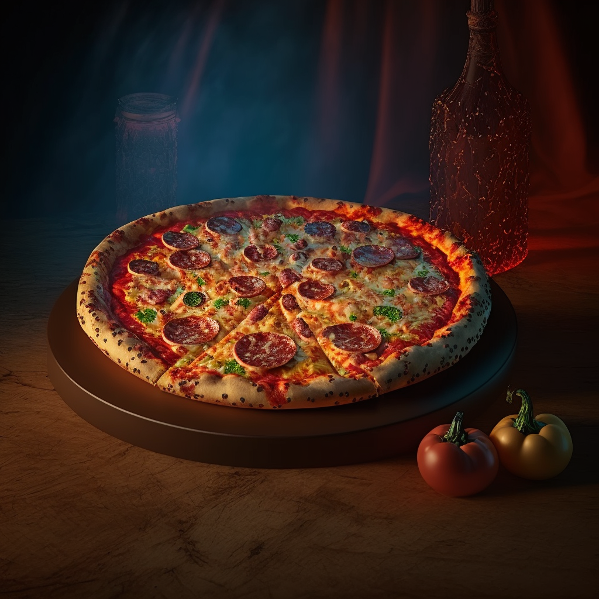

Pizza
Description
Pizza is a savory dish of Italian origin, consisting of a usually round, flattened base of leavened wheat-based dough topped with tomatoes, cheese, and often various other ingredients (anchovies, olives, meat, etc.), which is then baked at a high temperature, traditionally in a wood-fired oven. A small pizza is sometimes called a pizzetta. A person who makes pizza is known as a pizzaiolo. The term pizza was first recorded in the 10th century in a Latin manuscript from the Southern Italian town of Gaeta in Lazio, on the border with Campania. Modern pizza was invented in Naples, and the dish and its variants have since become popular in many countries. The term "pizza" was first documented in a Latin manuscript from the Southern Italian town of Gaeta in Lazio, on the border with Campania, dated 997 AD. The Neapolitan pizza was born in the 18th or 19th century in the taverns of Naples. The word pizza was first recorded in the Gaeta document, dated 997 AD. The modern pizza was invented in Naples, and the dish and its variants have since become popular in many countries and pizza restaurants have been established in most metropolitan areas around the world. The first pizzeria was opened in 1830, in Naples.
ingredients
- Pizza dough
- tomato sauce
- mozzarella cheese
- pepperoni(and or other meats of your choice)
- pepper
- onions
- garlic
- olive oil
- Fresh basil
- Mushrooms
- Bell peppers
- Jalapenos
Steps
- Preheat oven to 450 degrees F (230 degrees C).
- Roll out your pizza dough to your desired thickness and shape.
- Spread a layer of tomato sauce evenly over the dough, leaving a small border around the edges.
- Sprinkle a generous amount of shredded mozzarella cheese over the sauce.
- Add your desired toppings.
- Drizzle a small amount of olive oil over the pizza.
- Sprinkle some minced garlic and chopped fresh basil on top for added flavor.
- Place pizza in the preheated oven and bake for 10-12 minutes, or until the crust is golden brown and the cheese is melted and bubbly.
- Remove the pizza from the oven and let it cool for a few minutes before slicing and serving.